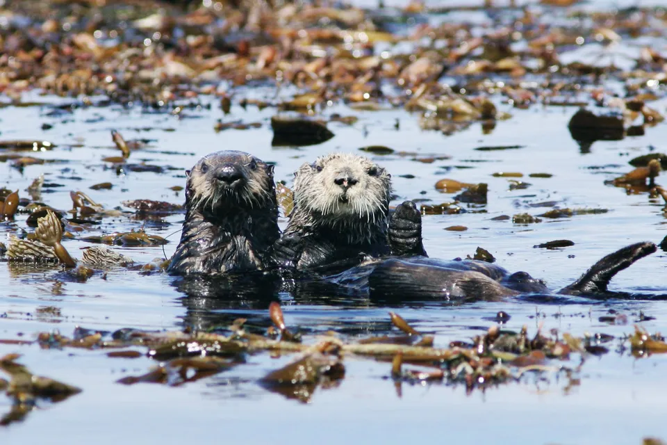

Sea Otter Habitat
Sea otters inhabit coastal marine environments in the North Pacific Ocean, including areas off the coasts of California, Alaska, Russia, and Japan. They prefer shallow waters near kelp forests, seagrass beds, and rocky shorelines, which provide abundant food and shelter. These habitats are rich in marine invertebrates like sea urchins, crabs, clams, and mussels, which make up the sea otters' diet. Kelp forests also serve as a safe resting area, where sea otters can anchor themselves using kelp fronds to avoid drifting. While primarily coastal, sea otters occasionally venture further offshore, especially in areas with calm waters. Their reliance on specific habitats makes them vulnerable to environmental changes, pollution, and habitat destruction.
